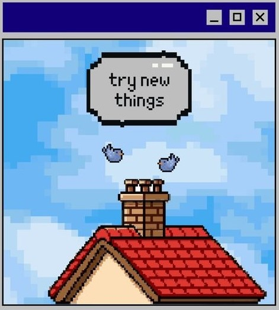

BOB THE BUILDER!

I am Passionate about creating Programs, interactive Websites, automating the task, building desktop applications. A Geek and Nerd sitting in the room building things like 'Bob The Builder'.
DIGITALLY DRAINED, BUT LOVES BEING A DEVELOPER. BASED IN PUNJAB, INDIA.
FREELANCER
SOFTWARE DEVELOPER